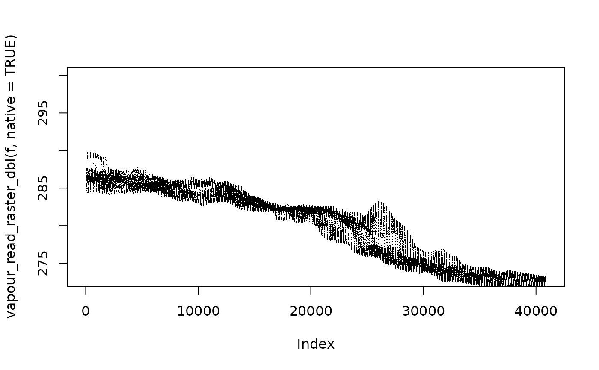

These wrappers around vapour_read_raster() guarantee single vector output of the nominated type.
Usage
vapour_read_raster_raw(
x,
band = 1,
window,
resample = "nearestneighbour",
...,
sds = NULL,
native = FALSE,
set_na = TRUE,
nara = FALSE
)
vapour_read_raster_int(
x,
band = 1,
window,
resample = "nearestneighbour",
...,
sds = NULL,
native = FALSE,
set_na = TRUE
)
vapour_read_raster_dbl(
x,
band = 1,
window,
resample = "nearestneighbour",
...,
sds = NULL,
native = FALSE,
set_na = TRUE
)
vapour_read_raster_chr(
x,
band = 1,
window,
resample = "nearestneighbour",
...,
sds = NULL,
native = FALSE,
set_na = TRUE
)
vapour_read_raster_hex(
x,
band = 1,
window,
resample = "nearestneighbour",
...,
sds = NULL,
native = FALSE,
set_na = TRUE
)Arguments
- x
data source
- band
index of band/s to read (1-based), may be repeated or in any order
- window
src_offset, src_dim, out_dim
- resample
resampling method used (see details)
- ...
reserved
- sds
index of subdataset to read (usually 1)
- native
apply the full native window for read,
FALSEby default- set_na
specify whether NA values should be set for the NODATA
- nara
logical whether to return a (scaled) nativeRaster
Examples
f <- system.file("extdata", "sst.tif", package = "vapour")
vapour_read_raster_int(f, window = c(0, 0, 5, 4))
#> [1] 286 286 286 286 286 286 286 286 286 286 286 286 286 286 286 286 286 286 286
#> [20] 286
vapour_read_raster_raw(f, window = c(0, 0, 5, 4))
#> [1] ff ff ff ff ff ff ff ff ff ff ff ff ff ff ff ff ff ff ff ff
vapour_read_raster_chr(f, window = c(0, 0, 5, 4))
#> [1] "#FFFFFF" "#FFFFFF" "#FFFFFF" "#FFFFFF" "#FFFFFF" "#FFFFFF" "#FFFFFF"
#> [8] "#FFFFFF" "#FFFFFF" "#FFFFFF" "#FFFFFF" "#FFFFFF" "#FFFFFF" "#FFFFFF"
#> [15] "#FFFFFF" "#FFFFFF" "#FFFFFF" "#FFFFFF" "#FFFFFF" "#FFFFFF"
plot(vapour_read_raster_dbl(f, native = TRUE), pch = ".", ylim = c(273, 300))
